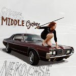

Music Reviews
-
Yeah Yeah Yeahs It's Blitz!
Just like the pulverized egg on its cover, It's Blitz! isn't afraid to get messy. The real question is whether it's cooked up a nice omelette or some bland soufflé.
Kevin Liedel puts the breakfast metaphors aside and digs in... -

M. Ward Hold Time
I wish I could hold time and listen to this on repeat.
Cara Nash is charmed... -

Clue to Kalo Lily Perdida
Lily Perdida, Mark Mitchell's newest psuedo-concept album, paints a picture of Lily using ten different brushes. The result is an engaging, if not befuddling, character profile of the album's titular heroine.
Andy Stewart scratches his head in wonder... -

Svarte Greiner Kappe
In keeping with the new Type tradition of gloomy drone excursions, Norwegian Svarte Greiner delivers an iceberg, but how deep below the surface does it go?
Gabriel Keehn puts on layers and goes out... -

Mi Ami Watersports
Tired of No Wave and Post-Punk revivalists at this point? Well, Mi Ami is actually better than that.
Sean Caldwell reviews... -

U2 No Line on the Horizon
I won't spoil it, just go ahead and read the review.
Alan Shulman reviews... -
Ghostface Killah GhostDeini the Great / Fish n Chips
Ghostface's fourth Def Jam release in five years, GhostDeini the Great, falls somewhere between a decent introduction and ho-hum collection of alternate verses and remixes that only occasionally add any depth to the originals. In contrast, the Fish n Chips mixtape shows him in fine form.
Chris Conti reviews... -
Mokira Persona
Andreas Tilliander (aka Mokira & like 128 other things) gives a nod to those crazy krauts as he flows by in a cosmic egg of his own.
Gabriel Keehn reviews... -

Neko Case Middle Cyclone
Neko Case's followup to Fox Confessor Brings The Flood has a lot to live up to. Thankfully, good things come atop muscle cars wielding swords.
Kevin Walker soaks it all in -
Bell X1 Blue Lights on the Runway
In a week where U2 dominates all the headlines, another Irish band is quietly charting its course to stardom. But is Bell X1's Blue Lights on the Runway two steps forward or one step back?
Kevin Liedel looks for the answers...